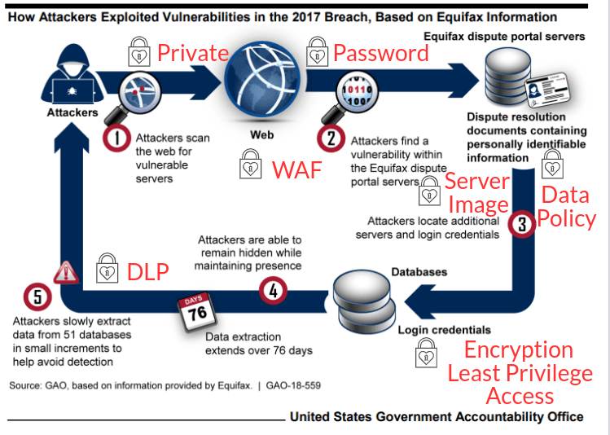

Preventive Control
- Private Web access
- Data Retention Policy
- Update communication policy
- Security Awareness Framework
- Web Application Firewall (WAF)
Put private information regarding Equifax's susceptible version of web framework on private access website not indexed by search engine.
Avoid storing customer's sensitive information beyond the time necessary to provide the service.
The person in charge of patching the web portal did not receive the alert as he/she was not part of the email recipient list. Thus, the patching process was not proactive.
Request management to have company-wide cyber security management framework and ensure its adequate staffing and budget. Equifax can also share its latest security framework with other companies.
It protects web applications from SQL injections and other attacks. WAF could have prevented the exploitation of Equifax's vulnerability.
Preventive Control
- Data Loss Prevention (DLS) system
- Segmentation of systems
- Encryption for Personal Identifiable Information (PII)
- Strong password
- Knowledge in use of vulnerability scanners
It identifies, monitors and potentially averts unauthorized moves of sensitive data in and out of the network. DLS could have prevented the massive out flow of 14-16 Gb of data for 76 days undetected.
Equifax had shared file systems, notes or configuration files from one system and can be accessed from other systems
None of the PII from the stolen data was encrypted, therefore compromising the confidentiality of the stolen PII. Encryption, truncation, masking or hashing of the critical PII is needed.
one database has a password which matched the name of the database. An online portal had default username "admin" and password "admin" for an administrative account.
Equifax IS team scanned the system exposed to the internet at root directory, not the subdirectory where vulnerabil;ity was listed. Better training is needed.
Defective Control
- Intruder Detection and Prevention System (IDS/IPS)
- Network logs forensics
Equifax's IDS/IPS was not able to detect malicious traffic leaving the system due to an expired SSL certificate from Nov 2016 to July 2017. A working Automated SSL certificate management tool is needed.
Consult Mandiant (now part of Google cloud) security team. Both Equifax and Mandiant security teams analyzed digital forensic data, they found attackers installed a backdoor in Equifax's servers.
Corrective Control
- Server Images
One way to correct online servers infected by malware is restoring from offline server images, which remain untouched by the threat actors.
Implementation of controls
Costs and Justification
Preventive Control Costs
| Control | Role / Product | Cost per year ($) |
|---|---|---|
| Private web access | new web developer | 65,000 |
| Data retention policy | new data analyst | 70,000 |
| Web Application Firewall (WAF) | Microsoft | 1,080 |
| Data Loss Protection (DLP) | ManageEngine | 795 |
| System compartmentalization | new system engineer | 100,000 |
| Encryption and strong password | new IT administrator | 80,000 |
Defensive Control Costs
| Control | Role / Product | Costs per year ($) |
|---|---|---|
| Network logs forensics | Mandiant (now part of Google cloud) | 50,000 |
| SSL management tool | Solar Winds | 3,346 |
Corrective Control Costs
| Control | Role / Product | Costs per year ($) |
|---|---|---|
| Server Images | Acronis | 999 |